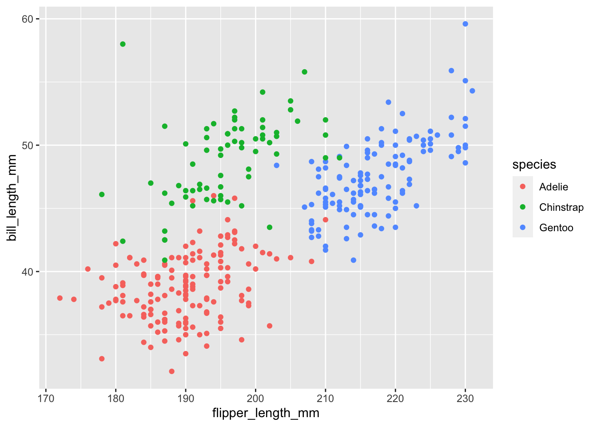

library(tidyverse)
library(tidymodels)
library(palmerpenguins)
library(gapminder)HW 5 - Regression + other stories
Homework
Important
This homework is due Thursday, Nov 10 at 11:59pm ET.
Homework assignments are individual, not team based.
Getting started
Go to the sta199-f22-2 organization on GitHub. Click on the repo with the prefix
hw-05. It contains the starter documents you need to complete the homework assignment.Clone the repo and start a new project in RStudio. See the Lab 0 instructions for details on cloning a repo and starting a new R project.
Workflow + formatting
- Update author name on your document.
- Label all code chunks informatively and concisely.
- Follow the Tidyverse style guide.
- Make at least 3 commits.
- Resize figures where needed, avoid tiny or huge plots.
- Use informative labels for plot axes, titles, etc.
- Turn in an organized, well formatted document.
Packages
We’ll use the tidyverse for much of the data wrangling and visualization and tidymodels for modeling. In addition, we’ll use the palmerpenguins and gapminder for data.
Exercises
Exercise 1 - A work of aRt
Your task is to make the following plot as ugly and as ineffective as possible. Change colors, axes, fonts, theme, or anything else you can think of in the code chunk below. You can also search online for other themes, fonts, etc. that you want to tweak. Try to make it as ugly as possible, the sky is the limit!
In 2-3 sentences, explain why the plot you created is ugly (to you, at least) and ineffective.
ggplot(
penguins,
aes(x = flipper_length_mm, y = bill_length_mm, color = species)
) +
geom_point()Warning: Removed 2 rows containing missing values (geom_point).
Exercise 2 - GDP vs. life expectancy
Gapminder is a “fact tank” that uses publicly available world data to produce data visualizations and teaching resources on global development. We will use an excerpt of their data to explore relationships among world health metrics across countries and regions between the years 1952 and 2007. The data set is called gapminder, from the gapminder package. A table of variables can be found below.
country: The country namecontinent: The continent nameyear: ranges from 1952 to 2007 in increments of 5 yearslifeExp: life expectancy at birth, in yearspop: population of countrygdpPercap: GDP per capita (US$, inflation-adjusted)
Data: For our analysis, we will only be working with data from 2007. Below, filter the data set so only values from the year 2007 are shown. Save this data set as
gapminder_07and use it for the remainder of this exercise and the following.Visualization: We are interested in learning more about life expectancy, and we’ll start with exploring the relationship between life expectancy and GDP. Create two visualizations:
Scatter plot of
gdpPercapvs.lifeExp.Scatter plot of
gdpPercap_logvs.lifeExp, wheregdpPercap_logis a new variable you add to the data set by taking the natural log ofgdpPercap.
First describe the relationship between each pair of the variables. Then, comment on which relationship would be better modeled using a linear model, and explain your reasoning.
Model fitting and interpretation:
Fit a linear model predicting log gross domestic product from life expectancy. Display the tidy summary.
Interpret the intercept of the model, making sure that your interpretation is in the units of the original data (not on log scale).
Interpret the slope of the model, making sure that your interpretation is in the units of the original data (not on log scale).
Model evaluation:
Calculate the R-squared of the model using two methods and confirm that the values match: first method is using
glance()and the other method is based on the value of the correlation coefficient between the two variables.Interpret R-squared in the context of the data and the research question.
Exercise 3 - GDP vs. life expectancy + continent
Next, we want to examine if the relationship between GDP and life expectancy that we observed in the previous exercise holds across all continents in our data. We’ll continue to work with logged GDP (gdpPercap_log) and data from 2007.
Justification: Create a scatter plot of
gdpPercap_logvs.lifeExp, where the points are colored bycontinent. Do you think the trend betweengdpPercap_logandlifeExpis different for different continents? Justify your answer with specific features of the plot.Model fitting and interpretation:
Regardless of your answer in part (a), fit an additive model (main effects) that predicts
gdpPercap_logfrom life expectancy and continent (with Americas as the baseline level). Display a tidy summary of the model output.Interpret the intercept of the model, making sure that your interpretation is in the units of the original data (not on log scale).
Interpret the slope of the model, making sure that your interpretation is in the units of the original data (not on log scale).
Prediction: Predict the GDP of a country in Asia where the average life expectancy is 70 years old.
Exercise 4 - GDP vs. life expectancy x continent
Finally, we want to examine if the relationship between GDP and life expectancy that we observed in the previous exercise holds across all continents in our data again, this time allowing for different relationships between GDP and life expectancy across continents.. We’ll continue to work with logged GDP (gdpPercap_log) and data from 2007.
Model fitting and interpretation: Fit an interaction model that predicts
gdpPercap_logfrom life expectancy and continent (with Americas as the baseline level). Display a tidy summary of the model output and in 2-3 sentences, explain how this model differs from the additive model.Estimated model: Write out the estimated model using proper notation.
Prediction: Predict the GDP of a country in Asia where the average life expectancy is 70 years old. Is this prediction different from your prediction with the additive model from Exercise 3?
Model evaluation: Would the R-squared value for this model in exercise 4 be larger or smaller than the R-squared value for the model in exercise 3. Without running any code, please write out and justify your answer.
Exercise 5 - Hotel Cancellation
For this exercise, we will explore hotel cancellations. The data describe the demand of two different types of hotels. Each observation represents a hotel booking between July 1, 2015 and August 31, 2017. Some bookings were cancelled (is_canceled = 1) and others were kept, i.e., the guests checked into the hotel (is_canceled = 0). You can view the code book for all variables here.
The data can be found in the data folder: hotels.csv. Using these data, we will try to answer the following question:
Do we expect reservations earlier in the month or later in the month to be cancelled?
Exploration: In a single pipeline, calculate the mean arrival date (
arrival_date_day_of_month) for both booking that were cancelled and that were not cancelled.Justification: In your own words, explain why we can not fit a linear model to model the relationship between if a hotel reservation was cancelled and the day of month for the booking.
Model fitting and interpretation:
Fit the appropriate model and display a tidy summary of the model output.
Interpret the slope coefficient in context of the data and the research question.
Estimated model: Write out the estimated model using proper notation.
Predicted: Calculate the probability that the hotel reservation is cancelled if it the arrival date date is on the 26th of the month. Based on this probability, would you predict this booking would be cancelled or not cancelled. Explain your reasoning for your classification.
Exercise 6 - Communicating statistics
Communication is a critical yet often overlooked part of data science. When we engage with our audience and capture their interest, we can ultimately better communicate what we are trying to share.
Please watch the following video: Hans Rosling: 200 years in 4 minutes.
Then, write a paragraph (4-5 sentences) addressing the following:
What did you enjoy about the presentation of data? What did you find interesting
Were there any aspects of the presentation that were hard to follow? If so, what?
What are your general take-aways from this presentation?
What are your general take-aways from how this presentation was given?
Wrap up
Submission
- Go to http://www.gradescope.com and click Log in in the top right corner.
- Click School Credentials Duke Net ID and log in using your Net ID credentials.
- Click on your STA 199 course.
- Click on the assignment, and you’ll be prompted to submit it.
- Mark all the pages associated with exercise. All the pages of your homework should be associated with at least one question (i.e., should be “checked”). If you do not do this, you will be subject to lose points on the assignment.
- Select the first page of your PDF submission to be associated with the “Workflow & formatting” question.
Grading
| Component | Points |
|---|---|
| Ex 1 | TBD |
| Ex 2 | TBD |
| Ex 3 | TBD |
| Ex 4 | TBD |
| Ex 5 | TBD |
| Ex 6 | TBD |
| Workflow & formatting | 5 |
| Total | 50 |
Note
The “Workflow & formatting” component assesses the reproducible workflow. This includes:
- At least three commits
- Linking HW pages on Gradescope
- Following tidyverse code style
- All code being visible in rendered PDF (no more than 80 characters)
- Appropriate figure sizing, and figures with informative labels and legends